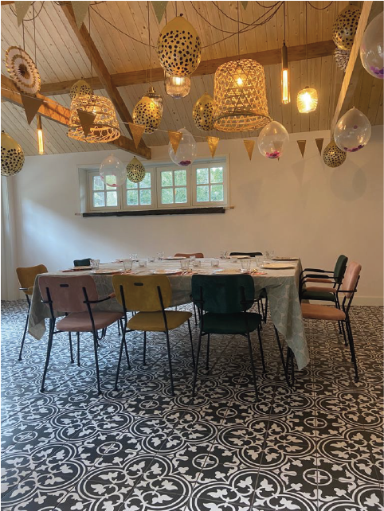
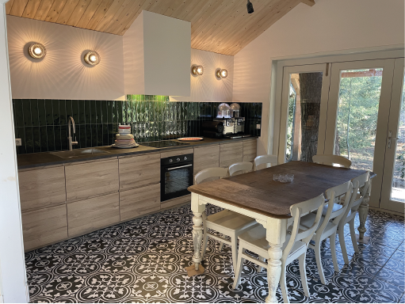
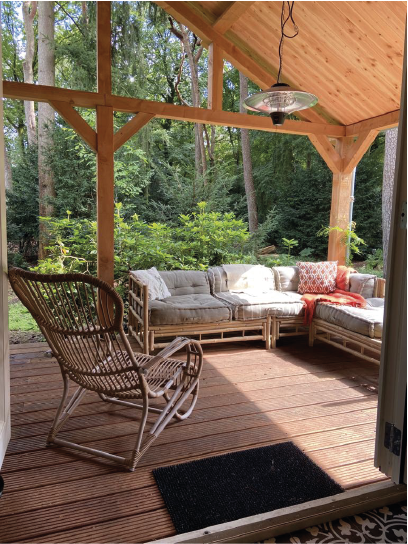
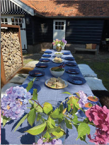
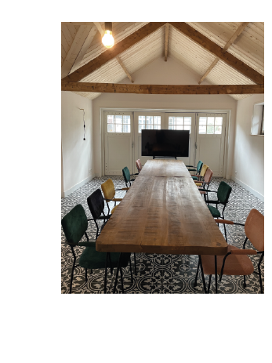
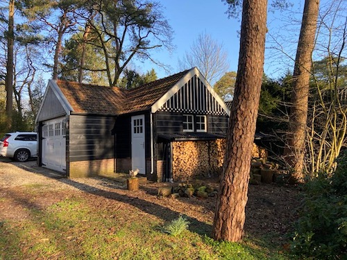
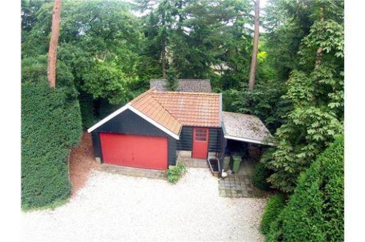

Dit is het vergader gedeelte, met genoeg belichting en twee grote tafels.

Dit is de keuken die aansluit aan het vergader gedeelte.

Er grenst ook een launge area aan waar je in de zomer heerlijk van de zon kan
genieten.

Met lekker weer kun je ook buiten zitten en genieten van de catering.

Hier ziet u nog een keer de zaal maar dan met de tafels in een andere opstelling.

Dit is de buitenkant van het Tuinhuis, nog zonder het buitenzit gedeelte.

Dit was het tuinhuis voor de grote verbouwing nog in orginele staat.